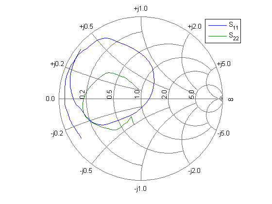
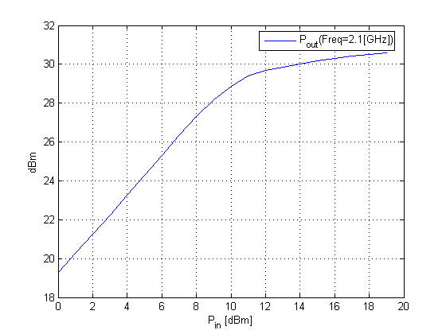
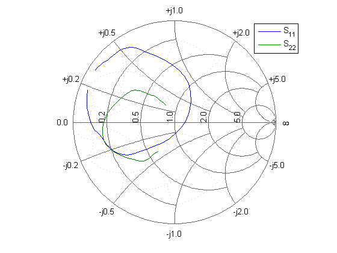
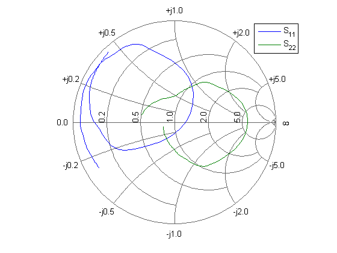
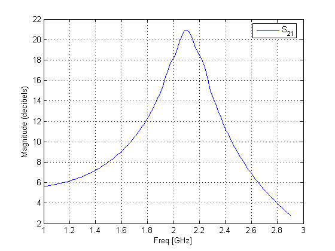
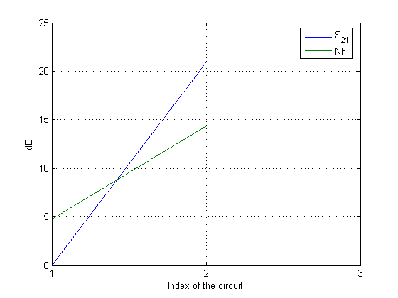

The RF Toolbox has many built-in RFCKT objects for the frequency-domain analysis of different kinds of RF circuits and networks. This demo first creates three individual RFCKT objects and visualizes their data by using the built-in methods of the RFCKT objects. Then, it cascades them to get a cascaded RFCKT object and visualizes its S-parameters over a specified frequency range. Lastly, it calculates and plots the budget data of the cascaded RFCKT object at 2.1GHz.
Create 3 circuit objects: a Transmission Line, an Amplifier, described by the data in the data file 'default.amp', and a Transmission Line. For more information on RFCKT objects, type: help rfckt
FirstCkt = rfckt.txline; SecondCkt = rfckt.amplifier('File', 'default.amp', 'IntpType', 'cubic'); ThirdCkt = rfckt.txline('LineLength', 0.025, 'PV', 2.0e8);
The circuit object has the built-in properties and methods. You can use the object's methods: GET and METHODS to view its properties and methods.
PropertiesOfFirstCkt = get(FirstCkt) PropertiesOfSecondCkt = get(SecondCkt) PropertiesOfThirdCkt = get(ThirdCkt) MethodsOfThirdCkt = methods(ThirdCkt);
PropertiesOfFirstCkt =
Name: 'Transmission Line'
nPort: 2
RFdata: []
Z0: 50
PV: 299792458
Loss: 0
LineLength: 0.0100
StubMode: 'None'
Termination: ''
PropertiesOfSecondCkt =
Name: 'Amplifier'
nPort: 2
RFdata: [1x1 rfdata.data]
File: 'default.amp'
IntpType: 'cubic'
OIP3: Inf
NF: 0
PropertiesOfThirdCkt =
Name: 'Transmission Line'
nPort: 2
RFdata: []
Z0: 50
PV: 200000000
Loss: 0
LineLength: 0.0250
StubMode: 'None'
Termination: ''
You can use the object's SET method to change its properties.
DefaultLength = get(FirstCkt, 'LineLength') set(FirstCkt, 'LineLength', .001); NewLength = get(FirstCkt, 'LineLength')
DefaultLength =
0.0100
NewLength =
1.0000e-003
The second circuit has S-parameters over the frequency range: 1GHz -> 2.9GHz that were read from the data file. It also has Pin-Pout data at the frequency 2.1GHz.
f = get(getdata(SecondCkt), 'Freq'); smith(SecondCkt, 'S11', 'S22'); legend show;
Plot Pout parameter on an X-Y plane
plot(SecondCkt, 'Pout','dBm'); legend show;
If you want to visualize the S-parameters of the second circuit over a different frequency range, you need to analyze the circuit first.
analyze(SecondCkt, [1.85e9:1e7:2.55e9]); smith(SecondCkt, 'S11', 'S22', 'zy'); legend show;
Cascade the three circuit objects to create a new cascaded circuit object, and then analyze it over the frequencies of the S-parameters in the data file 'default.amp'
CascadedCkt = rfckt.cascade('Ckts', {FirstCkt, SecondCkt, ThirdCkt});
analyze(CascadedCkt, f);
Plot S11 and S22 on a Z Smith chart
smith(CascadedCkt, 'S11', 'S22', 'z'); legend show;
Plot S21 on an X-Y plane
plot(CascadedCkt, 'S21', 'dB'); legend show;
Calculates the budget S21 and NF of the cascaded circuit at 2.1GHz, and plot them using the MATLAB plot function
dobudget(CascadedCkt); analyze(CascadedCkt, 2.1e9); budget = get(CascadedCkt.RFdata, 'BudgetData'); [results, names] = calculate(budget, 's21', 'NF', 'db'); s21 = results{1}; nf = results{2}; xdata = [1:length(s21)]; hlines = plot(xdata, s21, xdata, nf); legend(hlines, names{1:end}); xlabel('Index of the circuit'); set(gca, 'xtick', xdata); ylabel('dB'); set(get(gca,'YLabel'),'Rotation',90.0); grid on;